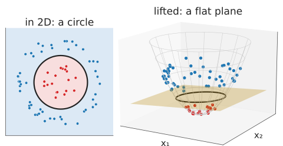
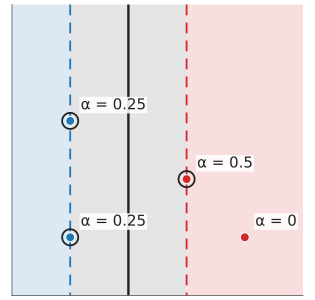
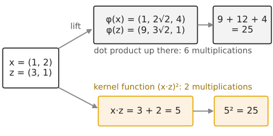
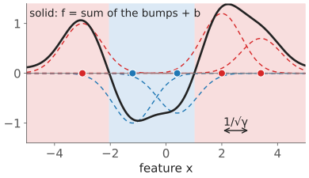
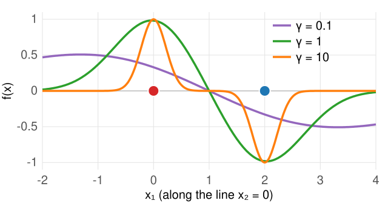
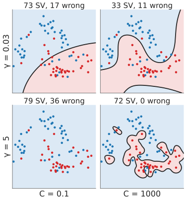

Last unit: the max-margin line. Many problems need a curve (unit 1: XOR, a ring around a blob). This unit gets curves while keeping the line, by working in a bigger feature space, and then never writing that space down.
Lifting: add features such as x_1^2 + x_2^2; a plane up there is a curve down here.
The SVM needs only dot products between data points.
Replace them by a kernel functionk(\mathbf x, \mathbf z): the kernel trick.
The RBF kernel function and its length scale 1/\sqrt\gamma; what large \gamma and large C do.
What makes a valid kernel function.
Slides titled The math give the formulas and proofs; the ideas are complete without them.
A ring around a blob: no line separates them in (x_1, x_2).
Add a third coordinate x_3 = x_1^2 + x_2^2 (the squared distance from the centre). Every point is lifted onto a paraboloid: the inner points sit low, the ring sits high.
Now a flat planex_3 = r^2 separates them.
Seen from above, the plane cuts the paraboloid in a circle: a curved boundary in 2D from a linear classifier in 3D.

The demo’s “ring → plane”: the max-margin plane in 3D and its cut.
General plan: map \mathbf x \mapsto \varphi(\mathbf x) to more features, fit the max-margin plane there. (On this day \varphi is the feature map; on the neural networks day\varphi was the activation function.)
Try it: lift and cut
The cost of explicit features
Lifting works, but the number of features explodes:
All products of two features (the quadratic map) of a pixel with 20 features: 20 + 20 + 190 = 230 coordinates (x_i, x_i^2, x_ix_j).
All monomials up to degree 5: 53 130 coordinates.
The Gaussian (RBF) similarity below corresponds to infinitely many.
We need a way to fit the max-margin plane in such a space without computing \varphi(\mathbf x).
The SVM only needs dot products
A fact from the math layer (next slides): the max-margin solution is a weighted sum over the support vectors,
f(\mathbf x) = \sum_{i} \alpha_i y_i\, \mathbf x_i\cdot\mathbf x + b, \qquad \alpha_i > 0 \text{ only for support vectors},
and the weights \alpha_i are found from the dot products \mathbf x_i\cdot\mathbf x_j of the training points alone.
Training: needs \mathbf x_i\cdot\mathbf x_j for all pairs. Prediction: needs \mathbf x_i\cdot\mathbf x for the support vectors.
In a lifted space: replace every \mathbf x_i\cdot\mathbf x_j by \varphi(\mathbf x_i)\cdot\varphi(\mathbf x_j). If that number can be computed directly from \mathbf x_i, \mathbf x_j, we never need \varphi.

Last unit’s example: only the support vectors have \alpha_i > 0.
Kernel functions: the kernel trick
A kernel function computes the dot product in a lifted space directly: k(\mathbf x, \mathbf z) = \varphi(\mathbf x)\cdot\varphi(\mathbf z).
By hand.\varphi(\mathbf x) = (x_1^2,\ \sqrt2\,x_1x_2,\ x_2^2), \mathbf x = (1, 2), \mathbf z = (3, 1):
Directly: \mathbf x\cdot\mathbf z = 3 + 2 = 5, and (\mathbf x\cdot\mathbf z)^2 = 25. The same, with 2 multiplications instead of 6.

So k(\mathbf x, \mathbf z) = (\mathbf x\cdot\mathbf z)^2is a dot product of quadratic features. The polynomial kernel function(\mathbf x\cdot\mathbf z + c)^p covers all monomials up to degree p at the cost of one dot product.
The SVM with f(\mathbf x) = \sum_i \alpha_i y_i\, k(\mathbf x_i, \mathbf x) + b is the max-margin plane in the lifted space: the kernel trick. (Not a convolution kernel: “kernel” alone in this course means the filter.)
The math: Lagrange multipliers
Recall (equality constraints): at the optimum of \min g(\mathbf u) subject to h(\mathbf u) = 0, the gradients are parallel, \nabla g = \alpha\nabla h; equivalently, \mathbf u is a stationary point of the Lagrangiang - \alpha h. (Multipliers are called \alpha here: \lambda is the prior weight course-wide.)
For inequality constraints h_i(\mathbf u) \ge 0 the multipliers must be \alpha_i \ge 0, and complementary slackness holds: \alpha_i\,h_i(\mathbf u) = 0. In words: a multiplier is non-zero only where its constraint is tight (holds with equality).
For the SVM, constraint i is y_i f(\mathbf x_i) - 1 \ge 0. It is tight exactly for the points on the edge of the street. So \alpha_i > 0 only for support vectors.
The math: the dual problem
Hard margin. Lagrangian L = \tfrac12\|\mathbf w\|^2 - \sum_i\alpha_i\left[y_i(\mathbf w\cdot\mathbf x_i + b) - 1\right], \alpha_i \ge 0. Stationarity:
The data enter only through \mathbf x_i\cdot\mathbf x_j: replace by k(\mathbf x_i, \mathbf x_j).
Soft margin: the same, with the extra bound \alpha_i \le C (from the slack multipliers). \alpha_i = C: inside the street or wrong; 0 < \alpha_i < C: on the edge.
b from any edge point: y_i f(\mathbf x_i) = 1. Then f(\mathbf x) = \sum_i\alpha_iy_i\,k(\mathbf x_i, \mathbf x) + b.
The math: how it is solved
The dual is a quadratic program in n variables with box constraints and one equality: convex, one optimum.
SMO (sequential minimal optimisation; Platt, 1998): change two\alphas at a time. Two, because \sum_i \alpha_iy_i = 0 forces any change in one to be balanced by another. For a pair the optimum is a 1D quadratic, solved in closed form and clipped to the box [0, C].
Which pair? The two that violate the optimality conditions most (with a second-order rule: Fan, Chen & Lin, 2005). Stop when no pair violates them by more than a tolerance.
The kernel matrix K_{ij} = k(\mathbf x_i, \mathbf x_j) is computed once (n^2 numbers): fine for a few thousand training points. The demos use this solver.
The RBF kernel function
The most used kernel function: the Gaussian or RBF (radial basis function)
k(\mathbf x, \mathbf z) = e^{-\gamma\|\mathbf x - \mathbf z\|^2}.
A similarity: 1 for identical points, falling to 0 with distance.
1/\sqrt\gamma is a length scale: how far one training point’s influence reaches.
f(\mathbf x) = \sum_i \alpha_iy_i\,e^{-\gamma\|\mathbf x_i - \mathbf x\|^2} + b: a signed sum of Gaussian bumps on the support vectors. Red bumps up, blue bumps down; the boundary is where they balance.
Seen before: the graph-cut n-link weight and the normalized-cuts affinity e^{-\Delta^2/2\sigma^2} (the graph cuts day) are this function with \gamma = 1/(2\sigma^2). The kernel matrixK_{ij} is that day’s affinity matrix W.

In 1D: red bumps up, blue bumps down; the sign of the sum decides.
Unlike a Gaussian mixture’s bumps (the Gaussian mixtures day), the weights are signed and fitted to separate, not to describe the density.
Two bumps by hand

Support vectors (0, 0) with \alpha y = +1 and (2, 0) with \alpha y = -1, b = 0, \gamma = 1:
f(1, 0) = e^{-1} - e^{-1} = 0 and f(1, 1) = e^{-2} - e^{-2} = 0: on the boundary, the line x_1 = 1.
At (0.5, 0) with \gamma = 0.1: 0.177 (wide, flat bumps); with \gamma = 10: 0.082 (narrow bumps, almost nothing reaches).
Try it: kernel functions in 2D
\gamma and C together
small C
large C
small \gamma (long length scale)
almost a straight line, wide street: underfits
still smooth; a few more bends
large \gamma (short length scale)
bumps too narrow to interact, many support vectors
an island around every training point: overfits, memorises
Large \gamma: each bump reaches only its own point; with large C every training point is classified correctly, and new points between them get the background value b.
In practice both are chosen by cross-validation on a log grid (next unit).

What makes a valid kernel function?
A kernel function must behave like a dot product somewhere.
Every kernel matrix K_{ij} = k(\mathbf x_i, \mathbf x_j) must be symmetric with no negative eigenvalues (positive semidefinite): a negative eigenvalue would be a “negative squared length”.
Example of an invalid “similarity”: two points with k(\mathbf x, \mathbf x) = k(\mathbf z, \mathbf z) = 1 and k(\mathbf x, \mathbf z) = 2. The matrix \begin{bmatrix}1 & 2\\2 & 1\end{bmatrix} has eigenvalues 3 and -1. The “squared distance” would be k(\mathbf x, \mathbf x) + k(\mathbf z, \mathbf z) - 2k(\mathbf x, \mathbf z) = -2: impossible.
Building new ones: sums and products of kernel functions, and positive multiples, are kernel functions.
A valid kernel function keeps the training problem convex: one optimum.
The math: Mercer’s condition
Mercer: k is a dot product \varphi(\mathbf x)\cdot\varphi(\mathbf z) in some (possibly infinite-dimensional) space \iff for every finite set of points the kernel matrix is symmetric positive semidefinite. (Stated, not proven.)
The RBF kernel function’s space is infinite-dimensional: e^{-\gamma\|\mathbf x - \mathbf z\|^2} = e^{-\gamma\|\mathbf x\|^2}e^{-\gamma\|\mathbf z\|^2}\,e^{2\gamma\,\mathbf x\cdot\mathbf z}, and the Taylor series e^{2\gamma\,\mathbf x\cdot\mathbf z} = \sum_{p \ge 0} \frac{(2\gamma)^p}{p!}(\mathbf x\cdot\mathbf z)^p contains polynomial kernel functions of every degree.
The squared distance in the lifted space is \|\varphi(\mathbf x) - \varphi(\mathbf z)\|^2 = k(\mathbf x, \mathbf x) + k(\mathbf z, \mathbf z) - 2k(\mathbf x, \mathbf z), computable without \varphi.
Summary
A curved boundary = a plane in a lifted feature space\varphi(\mathbf x).
The SVM needs only dot products; a kernel functionk(\mathbf x, \mathbf z) = \varphi(\mathbf x)\cdot\varphi(\mathbf z) computes them without \varphi: the kernel trick. f(\mathbf x) = \sum_i \alpha_iy_i\,k(\mathbf x_i, \mathbf x) + b, a sum over the support vectors.
Polynomial (\mathbf x\cdot\mathbf z + c)^p; RBFe^{-\gamma\|\mathbf x - \mathbf z\|^2} with length scale 1/\sqrt\gamma (the graph-cut affinity with \gamma = 1/2\sigma^2).
Small \gamma: almost linear. Large \gamma and C: islands, overfitting.
Valid kernel functions give positive semidefinite kernel matrices.